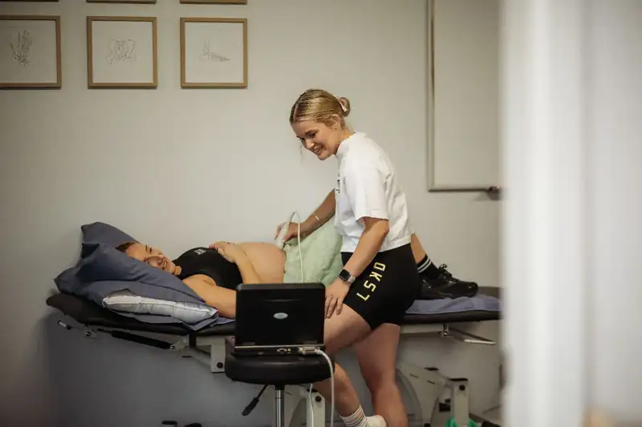

General physiotherapy
Physiotherapy for children and adults, based on what you need and what you want to get back to.
General physio →Physigro is a local physiotherapy clinic for children, teens and adults. Bri has a particular interest in paediatrics and women's pelvic health.

Choose the area that best fits what you're looking for. If you're not sure, just give Bri a call.
Physiotherapy for children and adults, based on what you need and what you want to get back to.
General physio →
Physio for babies, children and teens, with a focus on movement, development and everyday participation.
Paediatric physio →
Private, respectful care for women's pelvic health through pregnancy, after birth and other life stages.
Women's pelvic health →Brianna ShortSenior Physiotherapist“I'm a born and bred Glen Innes girl, and while my career took me away from home for a little while, the plan was always to find my way back.”
I started Physigro because I wanted to bring my experience and passion back to the community that raised me. I have a particular soft spot for women's pelvic health and paediatrics, but Physigro is here for everyone — from the littlest movers to the young at heart.
Choose a time through Physigro's online booking page.